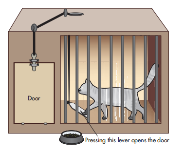
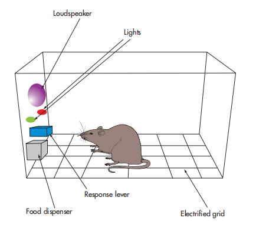
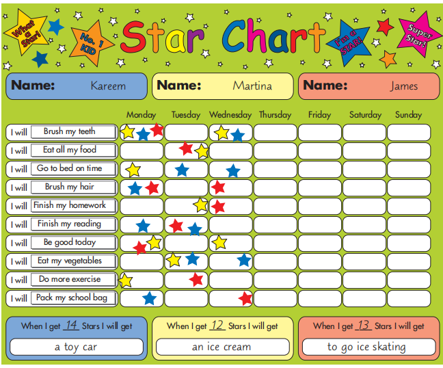

🐕 CHAPTER 20: CLASSICAL & OPERANT CONDITIONING AND SOCIAL LEARNING THEORY
经典条件反射、操作条件反射与社会学习理论
1. Learning Objectives（学习目标）
⚡ Quick Summary — 本节要学什么
How do we learn? Three answers in this chapter: by association（联结——bell means food is coming）, by consequence（后果——press lever, get food）, and by watching others（观察——copy what works for someone else）. These are the three great learning theories: classical conditioning, operant conditioning, and social learning theory.
🎯 By the end of this chapter, you should be able to describe and evaluate (spec 4.1.1 – 4.1.3):
- Classical (Pavlovian) conditioning（经典条件反射）— its main principles: UCS, UCR, NS, CS, CR, plus extinction, spontaneous recovery, stimulus generalisation and discrimination.
- Operant conditioning（操作条件反射）— positive/negative reinforcement and punishment, primary/secondary reinforcers, schedules of reinforcement, and Skinner's (1948) 'Superstition in the pigeon' research.
- Social learning theory（社会学习理论）— observation, imitation, modelling, vicarious reinforcement, and the four processes: attention, retention, reproduction, motivation.
2. Getting Started — Where Do Fears Come From?（开局思考：恐惧从哪来）
⚡ Think about this before you read on
We acquire many behaviours through classical conditioning without even realising it. One such behaviour could be a fear of an object. If we have a frightening experience when an object is present, we may associate fear with that object. The next time we encounter it, we will show fear.
🕷️ 课本 Getting Started 任务
Here is a list of commonly feared animals. In pairs, discuss a situation which may have occurred which could result in a fear of each animal:
- 🕷️ spider（蜘蛛）
- 🐍 snake（蛇）
- 🐕 dog（狗）
- 🐴 horse（马）
Keep your stories in mind — by the end of §3 you will be able to label every step of how each fear was learned, using the proper psychological terms.
3. Classical Conditioning — Key Terms & the Three Stages（核心术语与三阶段）
Classical conditioning is learning by association. When we pair a new stimulus with an existing stimulus–response link or reflex, we learn to associate the two stimuli and respond in a similar manner to both.
🍜 课本例子 — the restaurant
For example, if you visited a restaurant and the food made you ill, you may associate the restaurant with feeling nauseous. Classical conditioning takes place when a neutral stimulus (NS) is paired with an unconditioned (unlearned) stimulus (UCS). Once they are paired/associated, the neutral stimulus will elicit the same response as the UCS.
We think of classical conditioning as occurring in three distinct stages（三个阶段）:
- Before conditioning: a neutral stimulus elicits no response. The unconditioned stimulus elicits an unconditioned response (UCR).
- During conditioning: a neutral stimulus is paired with an unconditioned stimulus. This elicits an unconditioned response because the UCS is present.
- After conditioning: the neutral stimulus alone elicits the same response as the UCS; it is renamed a conditioned stimulus (CS), which elicits the conditioned response (CR).
4. Pavlov's Dogs — the Original Experiment（巴甫洛夫的狗）
Ivan Petrovich Pavlov — Russian physiologist, Nobel Prize in Physiology or Medicine 1904 — whose landmark discovery came from his experiment with salivation in dogs.
Pavlov had a principal interest in studying digestive processes. Saliva is required to make food easy to swallow and it contains enzymes to break down certain compounds in the food. While carrying out his experiments, Pavlov became involved in studying reflex reactions as he observed that the dogs drooled and produced saliva without the proper stimulus. Pavlov hypothesised that the dogs were reacting to the lab coats of his assistants: each time the dogs were presented with food, the assistant presenting the food was wearing a lab coat. The dogs were responding as if food was on its way in the presence of a person wearing a lab coat.
The procedure: Pavlov created a soundproof lab to see if the presentation of precise stimuli would evoke a response in conditions that ensured no direct contact between the dogs and experimenter. Pavlov knew that food (UCS) would lead to salivation in the mouth of an animal (UCR). He then used a neutral stimulus — an item that in itself would not elicit a response — for example a metronome（节拍器）. Over several learning trials, the dog was presented with the ticking of the metronome immediately before the food appeared. If the metronome was ticking in close association with the meal, the dogs learned to associate the sound of the metronome with the sound of the food. After a while, just at the sound of the metronome, they responded by drooling.
✅ Conclusion（课本结论）
Pavlov concluded that environmental stimuli that previously had no relation to a reflex action, for example the sound of a metronome, could, through repeated pairings, trigger the salivation reflex — and that through the process of associative learning (conditioning), the conditioned stimulus leads to a conditioned response.
Taking it further — higher-order conditioning（进阶：高级条件反射）
Having identified the existence of this associative learning, Pavlov wished to establish the reliability of his findings. He set out to see if the same system of learning would work with other neutral stimuli: for example, the presentation of a vanilla odour, or a visual test involving a rotating disc being seen prior to food being given. Pavlov went on to pair a further neutral stimulus with the conditioned stimulus — for example, a shape or colour (CS2) with the sound of a metronome (CS1) — and found that higher order conditioning was possible. He also found that dogs showed stimulus generalisation to sounds of a similar tone but were able to discriminate between sounds that were of a quite different tone. The more similarity there was between a new neutral stimulus and the conditioned stimulus, the greater the amount of drooling from the dog.
🧠 Thinking Like a Psychologist（课本专栏）
Being scared of going to the dentist is a common fear. How would you explain this fear using the principles of classical conditioning? How would you go about removing a fear of the dentist? (Hint for the second half: hold that thought — §6 introduces the therapies built on exactly this answer.)
5. Beyond the Pairing — Generalisation, Discrimination, Extinction & Recovery（配对之后的四种现象）
Four processes that take the basic three-stage model into the real world — and each is a favourite 2-mark "identify the term" exam question.
Stimulus generalisation（刺激泛化）
The tendency to produce the same response to a stimulus which is similar to the conditioned stimulus. For example, you may be fearful of spiders, but also show the same fear response to other insects that look similar to spiders.
Stimulus discrimination（刺激辨别）
A conditioned response occurs only in response to a specific conditioned stimulus and not to other stimuli, because other stimuli are sufficiently different from the CS to not produce a response. For example, you may be fearful of moths, but not other flying insects.
Extinction（消退）
Pavlov showed that if the metronome (CS) is continually presented without any food (UCS) being paired with it, the dog will gradually learn to dissociate the two stimuli so will not salivate at the metronome.
Spontaneous recovery（自发恢复）
If the metronome is once again paired with food following extinction, the dog will quickly learn to associate the food with the metronome and will salivate at the metronome alone once more. This accelerated form of learning means that extinction is not the same thing as unlearning. While the response may disappear, it has certainly not been eradicated.
🧬 Why generalisation and discrimination matter — the evolutionary angle（课本原文）
The ability to generalise and discriminate between stimuli has important evolutionary implications. If our ancestors ate red berries while foraging and this made them seriously ill, they may have thought twice before eating some purple berries. Although the berries are strictly different, they are also similar and could therefore cause the same negative consequences. Such cautious behaviour would have helped to ensure their survival. Similarly, discrimination may also have proved useful to our ancestors' survival: if they took the risk of eating the purple berries and it produced no negative consequences, they would be able to make a similar distinction in future and provide the hunter-gatherers with another valuable food source, so enhancing their own survival.
🧪 Name that phenomenon · 四现象判定练习 亲身体验
课本 Checkpoint Q1 的四个场景。每个场景对应一个术语：stimulus generalisation / stimulus discrimination / extinction / spontaneous recovery。先自己判断，再点选项核对。
6. Evaluating Classical Conditioning（评价经典条件反射）
Read like a critic — this table is your 8-mark essay skeleton for "Evaluate classical conditioning as an explanation for human behaviour".
| Evaluation point | The evidence | Why it matters |
|---|---|---|
| Strength: strong experimental support | Pavlov's experiments with dogs are evidence for classical conditioning as an explanation of how animals acquire behaviour. While we should be cautious when using animal research to explain human behaviour, a similar outcome was achieved with a human child: John Watson and Rosalie Rayner (1920) conditioned a small boy, Little Albert, to be scared of a white rat using the principles of classical conditioning. This offers experimental support for classical conditioning as an explanation for how we acquire behaviour. | Lab-controlled cause-and-effect evidence in animals and a human replication — the pairing mechanism is real. |
| Limitation of that support | However, Little Albert was described as a particularly unemotional child, so the way in which he was conditioned to fear a white rat may not be the same as for other children. | One unusual child is a thin base for generalising — a built-in counterweight to the strength above. |
| Strength: explains phobias & powers therapies | Classical conditioning can explain a range of behaviours, notably phobias. A phobia is an irrational fear of an object or situation which can develop because we have associated the object with feeling scared. This knowledge has led to the development of treatments such as flooding and systematic desensitisation（系统脱敏——gradually facing up to the phobic object via a hierarchy of exposure, from least to most fearful, using relaxation techniques）. Juan Capafóns et al. (1998) found that systematic desensitisation did reduce a fear of flying, showing that classical conditioning can explain some human behaviours. | A theory that generates a working treatment which is proven effective has real explanatory power — the therapy's success loops back to support the theory. |
| Strength: aversion therapy for addictions | Classical conditioning has been used to treat people with addictions who learn to associate their addictive behaviour with something unpleasant. Aversion therapy（厌恶疗法）works by associating the undesirable behaviour with an aversive stimulus, such as an electric shock or a drug that makes you feel nauseous. | Same associative logic, run in reverse: instead of creating a fear, attach an unpleasant feeling to an existing behaviour. |
| Weakness: narrow range of behaviour | Classical conditioning can only explain how we acquire a narrow range of behaviours based on reflexive or involuntary responses. We learn to associate different stimuli with a limited number of reflex responses, but it cannot explain how we generate new voluntary responses. Furthermore, classical conditioning only explains learned responses, so fails to address the cognitive processes involved in learning. Complex forms of behaviour can be explained by decision-making and problem-solving. It also fails to account for biological factors, such as genetics and neurotransmitters, which are responsible for influencing some behaviours. | The scope problem: association handles reflexes (salivation, fear) but not choosing, planning or deciding — which is exactly where operant conditioning and SLT take over. |
| Wider issue: nature–nurture debate | Classical conditioning explains that behaviour is acquired through experiences we have, so is regarded as a nurture explanation. This suggests that all behaviour is learned, which ignores the role of nature. Some behaviours are influenced by biological/innate factors, such as being predisposed to being aggressive or sporty. Adopting an exclusively 'nurture approach' fails to account for factors from nature that influence behaviour. | A ready-made Issues & Debates paragraph: CC sits firmly on the nurture side and, taken alone, overclaims. |
| Wider issue: social control and ethics | Aversion therapy has a controversial history of use on behaviours which were considered undesirable at the time. It is argued that it was used as a form of social control to remove behaviour viewed as undesirable by others. It also has significant ethical implications because the aversive stimulus is unpleasant or even harmful. | Whose definition of "undesirable" gets conditioned? A theory that can be weaponised needs ethical guardrails. |
7. Operant Conditioning — from Thorndike's Puzzle Box to Skinner's Box（从迷箱到斯金纳箱）
Operant conditioning involves learning through consequence — an association is made between a behaviour and a consequence for that behaviour.
Put simply: if we get punished for a particular behaviour, according to the theory it is likely that we will not repeat that behaviour in future. However, if we show a behaviour that is followed by a positive experience — maybe praise or some physical reward — it is likely that this behaviour will be repeated.
🐦 课本例子 — the pigeon's buttons
When a laboratory pigeon taps a blue button with its beak, it receives a food pellet as a reward. However, when the pigeon taps a red button it receives a mild electric shock. As a result of learning these consequences, the pigeon learns to press the blue button but avoid the red button in future.
Edward Thorndike (1911) — instrumental learning（工具性学习）
It was Edward Thorndike (1911) who originally labelled this form of learning instrumental learning. His research involved what he called the puzzle box: a box in which he placed a kitten; the kitten had to solve the puzzle in order to escape the box to receive a food reward. Initially, he observed that the kitten would climb everywhere around the box — quite randomly — and accidentally hit the latch to open the door. Once the door opened and it was given food. However, after several trials the kitten escaped faster. The kitten had learned by trial and error（试误学习）, not by insight, that finding and opening the latch to get out meant it was rewarded by food.

KEY TERM — the law of effect（效果律）, created by Thorndike: a behaviour followed by a nice consequence will lead to replication of that behaviour; a behaviour followed by an unpleasant consequence will lead to it being withdrawn. Moreover, according to Thorndike's law of effect, all things being equal, the more often a response is performed in a given situation, the more likely it is to be repeated.
Burrhus Skinner — operant conditioning（操作条件反射）
Burrhus Skinner renamed instrumental learning as operant conditioning. Skinner took a scientific approach and felt he could not study something that was not directly observable, such as the mind. He believed that to understand human behaviour, it was necessary to apply scientific principles and methods. He felt the description operant conditioning was more appropriate as with this form of learning you are 'operating' on or being influenced by the environment. Skinner started his research in the 1930s, using lab experimentation with his 'Skinner Box' — essentially a box that could dispense food and electric shocks to animals such as rats or pigeons.

8. The ABC Model & the Four Consequences（ABC 模型与四种后果）
KEY TERM — the ABC model of operant conditioning: a way of explaining how operant conditioning works, showing how the consequence of a behaviour influences the replication of behaviour.
- Antecedent（前因）: the Skinner box would present a stimulus (lights/noise) that triggers a behaviour.
- Behaviour（行为）: a response made by the animal that can be observed (measured) as an outcome of the antecedent.
- Consequence（后果）: the reward/punishment following the behaviour (shock/food).
The four types of consequence（四种后果）
The work of Thorndike and Skinner shows us that a stimulus–response association can be encouraged so the behaviour is repeated. This is known as reinforcement. It also shows us that a behaviour can be discouraged through punishment. Both reinforcement and punishment can be both positive and negative.
Positive reinforcement (R+)
If a rat or pigeon is given something pleasurable like a food pellet following a desired behaviour, for example lever pressing, they are more likely to repeat this behaviour in future.
Negative reinforcement (R−)
The removal of something unpleasant in response to the desired behaviour. If a rat or pigeon is given an electric shock until a lever is pressed, they are more likely to press the lever again in future to avoid the unpleasant stimulus. This will also increase the likelihood of the behaviour being repeated.
Positive punishment (P+)
Adding an aversive stimulus that will reduce the showing of a behaviour. A child behaves badly at a party; the parents may scold the child — reducing the behaviour by presenting an unpleasant stimulus (scolding) when it occurs.
Negative punishment (P−)
The removal of a liked/desirable stimulus to reduce the appearance of a behaviour. The child at the party behaves badly and has their favourite toy taken away as a result. The removal of a desirable stimulus will reduce the frequency of the child's bad behaviour.
⚖️ Is punishment effective?（课本观点）
Punishment is not considered an effective way of learning because it often only results in a temporary suppression of undesirable behaviour and only teaches you what you should not do. Reinforcement is a better form of learning as it teaches you what to do. Furthermore, punishment can be humiliating and create anxiety and fear.
🎛️ Consequence classifier · 后果四分仪 亲身体验
课本 Activity 2 + Checkpoint Q2 的 11 个场景。两步判定法：①行为会重复吗？会 → reinforcement，不会 → punishment；②拿到了什么还是失去了什么？拿到 → positive，失去 → negative。小心 R− 和 P− 的陷阱——它们都涉及「不好的东西」，区别在于 R− 是移走坏东西来鼓励行为，P− 是拿走好东西来打击行为。
🔬 Wider Issues and Debates — practical issues in animal research（课本专栏）
Psychologists like Pavlov and Skinner chose to study animals for a number of reasons. Undoubtedly, humans and animals share many biological characteristics, which allow researchers to draw conclusions from one species to another. Moreover, animals allow researchers a higher degree of experimental control and objectivity compared to human participants. Indeed, Pavlov's and Skinner's experiments, which were generalised to humans, have made a huge contribution to the understanding of human behaviour. Others, however, criticise animal research for its lack of generalisability, suggesting that extrapolating from one species to another is problematic. In biological terms, evolution has created very specific demands for each species, with its own set of unique behaviours. There are also significant brain differences between humans and non-human animals. Validity is also an issue given that animals are studied in an artificial laboratory setting. Researchers need to be aware of such issues when looking to extend the results garnered from animal studies to humans.
🐕 Thinking Like a Psychologist（课本专栏）
Dog training is often based on the principles of operant conditioning. Using the different types of reinforcement and punishment, consider how you might go about training a dog for police search and rescue.
9. Types of Reinforcer & Token Economies（强化物类型与代币制）
When reinforcing a behaviour it is important to use a stimulus that will encourage a behaviour to be repeated. In operant conditioning there are two types of reinforcer that increase the likelihood of a behaviour being learned.
Primary reinforcers（初级强化物）
Occur naturally and satisfy basic human needs such as food, water and shelter. No learning needed — they work from birth.
Secondary reinforcers（次级强化物）
On the other hand, only strengthen the behaviour because they are associated with a primary reinforcer: for example money can be used to buy food, accommodation, clothing and so on. Secondary reinforcers have no intrinsic value themselves but can be exchanged for a primary reinforcer.
KEY TERM — a token economy（代币制）: a treatment method that provides secondary reinforcement for a desirable behaviour that can be saved up or exchanged for a primary reinforcer.
A token economy system is based on the principles of operant conditioning. It has the aim of trying to encourage desirable behaviour through a system of reward. The tokens used in such a system are secondary reinforcers as it is these that will be exchanged for primary reinforcers. The tokens are only given in return for showing the desired behaviour. The more tokens saved, the better the reward; therefore through selective reinforcement, desirable behaviours are encouraged. Token economies have been implemented in institutions such as schools and prisons. For example, students may be allocated tokens for good behaviour, such as good attendance, punctuality, or high test scores. These can then be exchanged for items in the school shop or perhaps a school trip.

✍️ Activity 3 — Should we use token economies?（课本 Activity 3）
One key question in society is whether it is appropriate to use token economies to promote desirable behaviour. Token economies are used in many different contexts, such as schools, prisons and clinical settings. For example, Paul and Lentz (1977) investigated the effectiveness of reinforcing appropriate behaviour with 84 schizophrenic patients. Patients were given tokens as rewards when they behaved appropriately and these could be exchanged for luxury items. They found that the token economy reduced some schizophrenic symptoms, such as bizarre motor behaviours (for example rocking and blank staring), and was also successful in improving interpersonal skills and self-care skills. However, tokens were not effective in treating the cognitive symptoms of schizophrenia, such as delusions and hallucinations, nor hostile behaviour such as screaming and swearing. They found that 11 per cent of token economy patients required drug treatment, compared to 100 per cent in their control group, and concluded that operant conditioning is an effective means of treating people with chronic schizophrenia.
In pairs, discuss the key question: should we use token economies to promote desirable behaviour? Use concepts, theories and/or research studied in your psychology course.
10. Schedules of Reinforcement（强化程序）
A schedule of reinforcement determines the time in which a behaviour will be reinforced.
In some situations a behaviour might be reinforced every time it is seen (continuous reinforcement 连续强化); although more realistically in the context of day-to-day life, a behaviour might be reinforced some of the time (partial reinforcement 部分强化). If Skinner had continuously reinforced the rats with food each time they pressed the lever, after a short while the rats would become sated and the motivation to press the lever would fall. Using a partial schedule of reinforcement Skinner found that the rats continued to press the lever. Interestingly, a behaviour that is acquired through partial reinforcement might take longer to learn, but is more resistant to extinction.
✍️ Activity 4 — Schedules all around us（课本 Activity 4）
Schedules of reinforcement are all around us: getting a treat each week we do household chores, being paid monthly by an employer, receiving a free drink if we collect a certain number of points at a café. In pairs, think of other ways in which our behaviour is reinforced using continuous and partial schedules of reinforcement.
11. Evaluating Operant Conditioning（评价操作条件反射）
Read like a critic — paired evaluation cards, textbook order.
| Evaluation point | The evidence | Why it matters |
|---|---|---|
| Strength: scientific, controlled evidence | Operant conditioning as an explanation of how we acquire behaviour is supported by highly controlled animal experiments. The rats and pigeons Skinner tested were observed in isolated boxes and cages to eliminate any other variables that could affect their behaviour other than the stimulus (food) being tested. This ensured that a cause-and-effect relationship could be made between the reinforcement and punishment given and the resulting behaviour. Photographs and videos were taken of the animals and their behaviours were precisely recorded by other observers. As only observable behaviour is measured, it can be argued that this is an objective measure. Moreover, such experiments can be replicated, allowing for reliability to be assessed. | Objective, replicable, cause-and-effect — the full scientific package. Lead your essay with this strength. |
| Weakness: ecological validity & species jump | However, this controlled environment is not a natural way to observe behaviour. The contrived and artificial nature of such experiments questions the ecological validity of the findings and the extent they can be applied to real-life settings. However, we should also be cautious when drawing conclusions from animal research of this nature. While animals may use trial and error to work their way out of a puzzle box, humans are more likely to problem-solve to escape. | The mirror-image limitation: what happens in a box may stay in the box — and a rat guessing is not a human reasoning. |
| Strength: real-life applications (token economies) | Operant conditioning is used in many everyday contexts, so has real-life applications. The token economy has been used in psychiatry, clinical psychology and education using patterns of reward to shape behaviour. Some token economies may take tokens away as punishment for undesirable behaviour, such as aggression. Ayllon and Milan (1979) reviewed a number of such programmes and found that they were successful for promoting certain behaviours, for example keeping rules and control over aggression. However, research suggests that the benefits of token economies are relatively short-lived and tend not to generalise beyond the institution itself. They are also viewed as a violation of human rights because privileges are withheld until enough tokens are earned. This raises a question over the rehabilitative value and ethics of token economies. | Applications exist and work — but with a shelf life, an institution boundary, and an ethics question. Write both halves. |
| Strength: explains a wide assortment of behaviours | A major strength of operant conditioning is that it can explain a wide assortment of behaviours, from addiction to language acquisition. Skinner would argue that a child's correct utterances are positively reinforced: a child says 'juice' and the parent smiles and gives the child some juice as a result. The child will find the outcome of saying this word rewarding, and this in turn will aid the child's language development. | Scope advantage over classical conditioning: OC handles voluntary, goal-directed behaviour — not just reflexes. |
| Wider issue: social control | Operant conditioning can be used to modify undesirable behaviour. Behaviour modification aims to extinguish undesirable behaviour (by removing the reinforcer) and replace the original behaviour with a desirable behaviour and reinforce it. Behaviour modification has been used in a variety of contexts — in parenting, for example, a parent might praise a child for tidying their room or sharing their toys, or might reduce television time for fighting with siblings. Using knowledge of operant conditioning can be viewed as helping support skill-building and improve well-being; however it could also be viewed as a form of social control used to manipulate desired behaviour. However, rewards and sanctions are a part of everyday life, and many would argue they are necessary for society to function. Skinner described a utopian society where citizens' behaviour was managed by operant conditioning in his fictional publication Walden Two. However, behavioural engineering may be used to restrict individual autonomy and freedom of choice, which could violate civil liberty. | Same double edge as CC's aversion therapy: who decides which behaviour to reinforce? Walden Two is the named example to quote. |
| Wider issue: reductionism | Learning theorists such as Skinner are happy to explain all behaviour as an outcome of previous learning. We, like other learning theorists, would argue that we are organisms that behave the way we do due to the sum of our experiences. This is known as reductionism（还原论）. However, this approach ignores other influences on our behaviour, such as innate/biological factors, including genetic differences and instincts. It could be said that Skinner's observations only account for observable behaviours and do not account for any unobservable behaviours — for example mental and emotional states such as anger or happiness — making his explanations limited and oversimplified. | The classic Issues & Debates paragraph: reducing rich behaviour to stimulus–response bonds throws away cognition, emotion and biology. |
| Weakness: ethics of animal research | The use of laboratory experiments with animals in classical and operant conditioning raises a number of ethical issues. It could be argued that Skinner's research, for instance, caused unnecessary suffering to the rats and pigeons in his experiments because they needed to be starved to around 75 per cent of their normal weight to be sufficiently motivated to perform. This needs to be weighed against the benefits of the research and whether or not the ends justify the means. Others may argue that the research was justified as it furthered our understanding of the behaviour. | The starvation detail (75% body weight) is the specific evidence — pair it with a cost–benefit judgement for full marks. |
12. Key Research — Skinner (1948) 'Superstition in the Pigeon'（必修研究：鸽子迷信）
Spec 4.1.2 explicitly requires researching Skinner (1948) Superstition in the pigeon — learn this study as a mini classic: AIM · METHOD · RESULTS · CONCLUSION + 3 evaluation angles.
Skinner (1948) — Superstition in the pigeon
Aim: Skinner devised a series of experiments using pigeons to test what would happen if the pigeon was reinforced with food without any desired behaviour being required.
Method: Placed in a cage for a few minutes a day, the hungry pigeons were fed via a food hopper which appeared for five seconds. Food was presented at regular intervals regardless of how the bird behaved.
Results: In six out of eight pigeons, clearly defined behaviour developed:
- One pigeon began turning counterclockwise（逆时针转圈）
- Another thrust its head towards the corner of the cage
- A third pigeon repeatedly tossed its head, and two pigeons began moving their head and body in a pendulum motion（钟摆式摆动）
- The final pigeon developed brushing movements of the head towards the floor
Conclusion: Skinner explained these behaviours as being a result of accidental reinforcement: the food reinforced whatever behaviour the bird displayed prior to food appearing. The bird behaves as if there is a relationship between its behaviour and the food appearing — even though there was not. This effect is more likely to occur if the food is presented in short intervals, such as every 15 seconds, because the bird can only perform a narrow range of behaviours within that time. However, once a behaviour was established, the intervals between the food appearing could be lengthened to up to two minutes.
Everyday parallel: These behaviours are similar to those which we develop in everyday life. If you have a mascot you take to a sporting event, it may be because you had the mascot when your team won, and it acts as reinforcement to take it again. Skinner paralleled the nature of this incidental learning with superstitious behaviour we can all develop.
Evaluation of Skinner (1948)（对鸽子迷信研究的评价）
| Evaluation point | The evidence | Why it matters |
|---|---|---|
| Weakness: sample & species | Criticisms of Skinner's research include that he used a small number of pigeons to conduct his experiment, with six of eight pigeons demonstrating superstitious behaviour. Furthermore, pigeons are unlike humans because humans are more likely to use rational thinking when choosing to behave in response to reinforcement. Therefore, it may be unwise to generalise these findings to explain how humans develop superstitious behaviours. | Two-step criticism: n = 8 is tiny, and pigeons don't second-guess their luck the way humans can. |
| Strength: control & reliability | The research was highly controlled and followed a standardised procedure with specific timings, such as the food appearing in specific intervals (five seconds, 15 seconds and two-minute intervals). In this way the behaviour of pigeons could be directly measured in different conditions, and we can be sure that the presentation of the food related directly to their behaviour. Furthermore, two observers had perfect agreement when counting the number and types of behaviours shown by the pigeons, which gives inter-rater reliability. | Standardised timings + two independent observers in perfect agreement = objective, replicable measurement. |
| Weakness: ethics | There are also ethical issues with this research. Pigeons are living vertebrate animals which are protected by legislation in many countries which regulates possible harm caused when conducting research using animals. The pigeons were starved to 75 per cent of their healthy body weight, which may be deemed unethical. However, Skinner minimised the number of pigeons used to just eight to ensure any harm was limited. | The starvation is the ethical flashpoint — but note the mitigation: minimum number of animals used. |
13. Social Learning Theory — Learning from Others（社会学习理论：看别人学）
Social learning theory differs from the principles of learning already examined earlier in this topic. For social learning theory, behaviour is explained not by simple association (classical) nor by consequence (operant), but by observation.
🌉 Why we need a third theory（为什么需要第三种理论）
CC explains reflexes; OC explains consequences. But think of learning to drive, to speak, to dance — you did not discover these by trial and error, and they are not reflexes. You watched someone. Social learning theory (largely attributed to the work of Albert Bandura) proposes that humans and animals learn by observing the others around them and subsequently imitating or copying the behaviour. This means that social learning theory does not ignore the role of cognition like classical and operant conditioning theories do — you must pay attention and remember what someone does in order to copy it.
KEY TERMS:
- Models / modelling（榜样/示范）: Individuals that are observed are called models. Models demonstrate a behaviour in the presence of another person, which is known as modelling.
- Role models（角色榜样）: significant individuals in a person's life. You are more likely to imitate role models such as parents or teachers. Children are surrounded by many role models — parents, peers, teachers and television characters. On a daily basis, these models provide examples of behaviour for children to observe and imitate.
When is imitation more likely?（什么时候更愿意模仿）
Behaviour is more likely to be imitated if the observer can identify with the role model and the observed behaviour is reinforced in some way. Effective role models are typically the same sex as the observer and/or can be admired for having status/power. Similarly, an observer is more likely to reproduce the model's behaviour if the consequences are rewarding rather than punishing for the role model.
KEY TERM — vicarious reinforcement（替代强化）: learning through the consequence of another person's behaviour — essentially, learning from the successes or mistakes of others.
课本例子: If a younger sibling is watching their older sibling eat their lunch and they get praised for not making a mess, they are more likely to copy this behaviour. They are unlikely to copy a behaviour that has previously been punished — for example an older sibling eating their lunch with their mouth open.
14. The Four Stages of Social Learning（社会学习四阶段）
Bandura theorised that social learning would only occur if the following four cognitive processes occurred: attention, retention, reproduction and motivation.
Attention（注意）
Bandura argued that one of the required conditions for effective learning was 'attention'. This illustrates a clear cognitive element in his theory: one can copy or not. Attention must be paid to the role model or else learning will not take place. Attention could depend on many factors, such as the distinctiveness of the behaviour being modelled and factors within the person observing a model, such as their level of arousal. Bandura proposed that a child is more likely to attend to role models who are similar to themselves and so are more likely to attend to the behaviour of people of the same sex.
Retention（保持）
Having focused on the modelled behaviour, the individual must then retain or store what they have attended to. Humans store the behaviours they observe and are then able to recall these later, reproducing the behaviour. This is a cognitive process which relies upon memory.
Reproduction（再现）
Reproduction involves imitation（模仿——copying a behaviour that has been observed and remembered）of the modelled behaviour. Here Bandura made it clear that factors such as the physical capabilities of the individual can affect whether the behaviour can be imitated. If the behaviour is beyond our capabilities, then it cannot be reproduced.
Motivation（动机）
The final process refers to the 'incentive'. If a reward is offered, we are more likely to reproduce the behaviour. Intrinsic motivation（内在动机）refers to doing an activity where there might be inherent satisfaction rather than some physical outcome — a young boy imitates his dad's behaviour and 'feels good' about his copied behaviour because he feels it makes him more like his dad. Extrinsic motivation（外在动机）refers to a motivator that is not so much a feeling but rather something tangible with a separable outcome, for example a sportsperson receiving a trophy or medal for their performance. Vicarious reinforcement is a form of motivation that does not directly reward the individual: instead it is when the role model is seen to receive a reward — a child witnessing another child showing good behaviour and receiving praise. Notice here the observing child does not get a reward themselves — the reward is vicarious: 'If I act like that, I could get a reward too!'
15. Evaluating Social Learning Theory（评价社会学习理论）
Read like a critic — evidence cards first, then the wider issues.
| Evaluation point | The evidence | Why it matters |
|---|---|---|
| Strength: scientific methods… but artificial | As with other learning theories, a strength of social learning is its commitment to scientific research methods. The theory is based on laboratory-based research methods that ensure reliability and allow inferences about cause and effect to be made. This can also be viewed as a weakness, as the studies have taken place in rather artificial settings, bringing into question the generalisability and ecological validity of the research. | One card, two faces: lab rigour buys cause-and-effect and costs realism. |
| Strength: recognises cognition & individual differences | Unlike classical and operant conditioning, social learning theory does allow for individual differences and acknowledges that cognitive and motivational factors can influence behaviour, as reflected in the four processes suggested by Bandura — through attention, retention, reproduction and motivation. | SLT's structural advantage over CC/OC in this topic: the learner is a thinker, not a reflex machine. |
| Strength: contribution to psychology & therapies | The theory has made a significant contribution to the psychology of aggression and gender development, and has formed the basis for a range of treatments such as phobias. Modelling-based therapies can be used with children or adults who may find behaviour therapies using direct conditioning difficult. Typically, modelling therapies involve learning through the observation and imitation of others. Having a positive role model can give individuals something to aim for, allowing them to change their behaviour in line with their role model — the role model may be the therapist or someone the individual already knows. | Application evidence: the theory powers real treatments (modelling therapy), especially for those who cannot handle direct conditioning. |
| Strength: experimental support (the Bandura series) | There is significant evidence for social learning theory from a series of experiments conducted on children attending Stanford University nursery. Bandura, Dorothea Ross and Sheila Ross (1961) found that children would imitate aggressive behaviour displayed by a same-sex adult role model. A further experiment showed that children would copy a role model modelling aggressive behaviour on film, and even a cartoon version (Bandura, Ross and Ross, 1963). A third experiment found that children were less likely to copy an aggressive role model who was punished; however, this was counteracted by the offer of a reward for imitating the role model (Bandura, 1965). These studies offer strong experimental support for social learning theory of aggression. | Three studies, one line of evidence: live model → film/cartoon → vicarious punishment and reward effects. Numbers to quote: 1961 / 1963 / 1965. |
| Strength: real-life application (media regulation) | Social learning theory has real-life application. During the 1960s, television was becoming commonplace in households and there was concern that children would be exposed to violent and age-inappropriate content. Social learning theory and Bandura's research informs us that children may learn from watching behaviour on television, so they should be protected with censorship regulations, such as age certification and pin-protected viewing. | The theory shaped broadcasting policy — age ratings and parental controls rest partly on SLT logic. |
| Biological support: Olsson and Phelps (2007) | There is also biological evidence for observational learning. Andreas Olsson and Elizabeth Phelps (2007) showed 11 participants a short film clip of someone receiving a mild electric shock when a coloured square appeared. Using an fMRI brain scan, they showed that the amygdala was more active when witnessing the film and when they were shown the same coloured square and expecting to receive the same shock. This gives biological evidence that participants had learned to fear the shock that they had witnessed. | Watched fear becomes real, measurable fear — the amygdala data shows observational learning has a physical trace. Numbers: 11 participants, fMRI, amygdala. |
| Animal evidence: Mineka & Cook (1988); Nicol & Pope (1999) | There was evidence for social learning among animals. Susan Mineka and Michael Cook (1988) observed rhesus monkeys raised in captivity, who originally showed no fear of snakes but did show alert reactions to wild monkeys in the presence of snakes. After watching the modelling of anxious reactions of wild monkeys in the presence of snakes, the captive monkeys also showed fear of snakes. Furthermore, Christine Nicol and Stuart Pope (1999) taught dominant and subordinate chickens in a flock to peck at a key for food. The chickens were then released back into their flock. They found that the chickens were more likely to copy the key-pecking from a dominant member of the flock than a subordinate chicken. This offers support for the imitation of role models. | Observational learning crosses species: fear learned by watching (monkeys), and status determines whose behaviour gets copied (chickens). |
| Supporting correlation: Prot et al. (2014) — and the challenge: Charlton (2000) | In a large-scale study of media use across seven different countries, Sara Prot et al. (2014) found a positive correlation between prosocial media（亲社会媒体——media that encourages helpful or appropriate behaviour）use and prosocial behaviour. It could be suggested that people who engage with prosocial media are more likely to imitate prosocial behaviour. However, Tony Charlton (2000) conducted a natural experiment to observe the behaviour of children on the remote island of Saint Helena before and after the introduction of television. He found that there was no change in the children's behaviour, which questions the credibility of social learning theory because the children did not imitate role models on television. | The supporting–challenging pair: Prot's correlation fits SLT; Charlton's island result breaks it. Hold both for a balanced evaluation. (Prot et al. 2014 is discussed further as a contemporary study.) |
16. Checkpoint & Exam Practice（自测与考试练习）
Checkpoint — the textbook quick-fire（课本 Checkpoint）
Q1 — Identify which example links to each key term relating to classical conditioning（已在 §5 互动中练习：stimulus generalisation · stimulus discrimination · extinction · spontaneous recovery）:
- A cat owner repeatedly opened the food cupboard door but did not feed their cat. The cat eventually stopped coming over when the cupboard door was opened. (extinction)
- A child became scared when a large red balloon popped next to them. At her birthday party she was scared of the pink and purple balloons. (generalisation)
- Sira was scared of earthworms, but she was not scared of caterpillars or slugs. (discrimination)
- Leonne disliked eating fish when he was younger because it had once made him ill. However, he eats fish as an adult. Leonne recently ordered fish at a restaurant and it made him ill. He no longer eats fish because it makes him feel nauseous. (spontaneous recovery)
Q2 — Look at the following examples and identify whether they are positive reinforcement, negative reinforcement, positive punishment or negative punishment（已在 §8 互动中练习）:
- You give your parrot some sunflower seeds every time it whistles at you. (positive reinforcement)
- Your cat jumps on you every time you return home. You remove your attention from your cat by turning your back and not fussing over so it does not jump up again. (negative punishment)
- Your horse pulls on the reins to go home when it starts to rain. (negative reinforcement — the rain stops when it goes home)
- You sound an air horn every time your horse paws the ground. (positive punishment)
Exam practice — the real thing（真题演练）
Question 1 — Rhea and the star chart（操作条件反射 apply 题）
Rhea has recently started to pinch her brother. Her mother uses operant conditioning to teach Rhea not to pinch her brother. Every day that Rhea does not pinch her brother their mother gives her a star on a star chart. Once Rhea has ten stars on the star chart she can have a biscuit.
(a) Identify the primary reinforcer that Rhea's mother uses with Rhea. AO1 (1 mark)
(b) Rhea no longer pinches her brother, but she recently started to pinch the family pet cat. Rhea's mother took away her favourite toy for a day as a punishment. State the type of punishment that Rhea's mother used. AO1 (1 mark)
(c) Explain why the punishment did not help Rhea learn how to play nicely with the cat. AO2 (1 mark)
Question 2 — Aanya and the bread（社会学习理论 describe 题）
Aanya has seen her father make bread several times. Her mother always thanks Aanya's father by cooking his favourite meal after he has baked the bread. Aanya has made bread for the first time. She feels a sense of achievement and has decided to make bread for the family every week. Describe, using social learning theory, why Aanya makes her family bread. (4 marks)
Question 3 — the 8-marker（经典条件反射评价题）
Evaluate classical conditioning as an explanation for human behaviour. AO3 (8 marks)